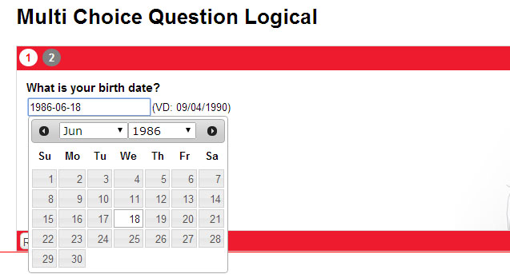
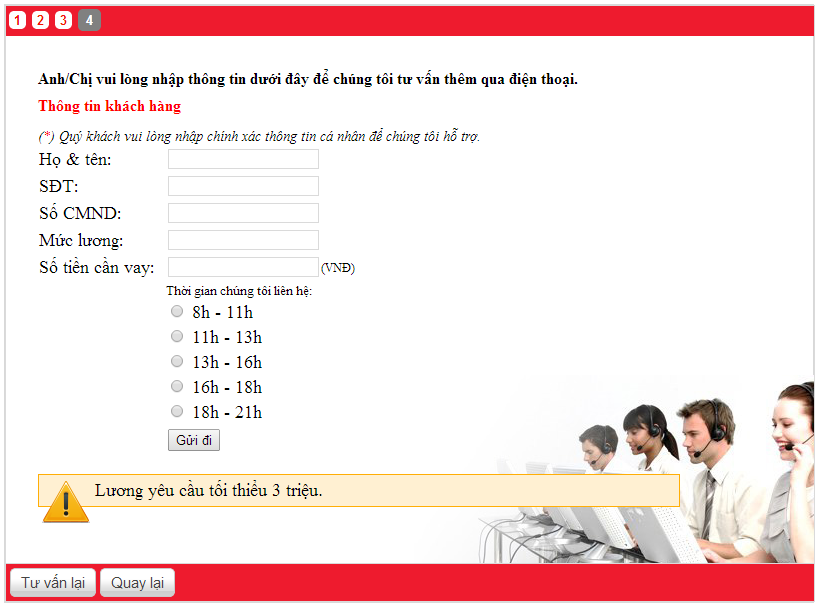

[JS]
var qview=new qChain(); //instance qChain class
//auto next question
qview.auto_next=true;
//load question
qview.load();
$(document).ready(function(){
$('#questions_holder').append(qview.get()); //add instance to document
});
//get faq holder
$(document).ready(function(){
qview.faq=document.getElementById('faq'); //faq container
});
Content accept HTML format
-Nội dung nhập có thể là plain/text hoặc định dạng phong phú html, làm cho phần nội dung câu hỏi/câu trả lời sinh động hơn.
Hỗ trợ javascript
Example: Câu hỏi hỏi về tuổi của người dùng, mà yêu cầu người dùng nhập tuổi. Ta sẽ dùng 1 input text hiển thị ở câu hỏi để cho người dùng nhập vào, sau đó nhấn nút next.

var birth=document.createElement('input');
answer.appendChild(birth);
answer.appendChild(document.createTextNode('(EX: 09/04/1990)'));
-answer là Object Dom element for answer item. You can use 'append' function to do this:
var birth=document.createElement('input');
append(birth); //instead of answer.appendChild(birth);
append(document.createTextNode('(EX: 09/04/1990)'));
+Next, Tick "Link object type" checkbox to enabled javascript, and write event for input text of birth:
$( birth ).datepicker({onSelect:function(dateText, inst) {
var d1=new Date(dateText);
var d2=new Date();
var age=d2.getYear()-d1.getYear();
if(age<21 || age>60){
next_question_listener(6,[data.answer_id,birth.value,data.question]);
set_text2next(6,'Tuoi 21 den 60 moi dc vay');
} else next_question_listener(4,[data.answer_id,birth.value,data.question]);
},
changeMonth: true,
changeYear: true
});
$(birth).datepicker('option', 'dateFormat', 'yy-mm-dd' );
$(birth).datepicker('setDate', '1986-06-19');
-this code run after answer content above. Field này thường viết tiếp phần javascript, tiếp nối javascript được viết ở phần nội dung câu trả lời, ví dụ như: sự kiện,..//nhảy đến câu hỏi ID=6, tham số thứ 2 là mảng 2 phần tử gồm: id câu trả lời (default: data.answer_id), giá trị của câu trả lời được lấy từ input text. next_question_listener(6,[data.answer_id,birth.value,data.question]); note: Nếu giá trị của câu trả lời k pải từ ng dùng cung cấp thì sử dụng mặc định: data.answerNote: Tất nhiên phần code này có thể viết chung vào phần nội dung câu trả lời (javascrit) ở trên.
next_question_listener(question_ID,[data.answer_id,data.answer,data.question]); //set explain string to next question set_text2next(6,'Tuoi 21 den 60 moi dc vay');
var but=$('').attr({type:'button',value:'Next question'});
but.click(cty_next); //sự kiện nút
$(answer).append(but);
//next button event
function cty_next(){
//sử dụng database dbtable, but dbtable is simple array for storing user values. We not recommand use this method
p.ref.get(1).dbtable['company']=cty.value;
//next question with question ID
next_question(8);
}
Lưu lịch sử quá trình trắc nghiệm của người dùng-hiển thị form lưu thông tin của người dùng
-Open include/templates.php find function name 'final_customer_form'. Đây là form lưu thông tin người trắc nghiệm được hiển thị sau câu hỏi cuối.
-Có 2 kiểu hiển thị: form hiển thị dạng dialog (popup) hoặc hiển thị ỏ ngay câu trả lời chứa code ở dưới đây (page).
-form mẫu tìm ở file include/templates.php hàm final_customer_form, bạn có thể thêm/bớt 1 số fields tuỳ ý.
//user form option
dlg_opt({
auto:1, //auto showing user form
type:'page' //hiển thị form ở nội dung câu trả lời này. Nếu type='popup' form được hiển thị dạng dialog.
});
//sự kiện khi nạp câu trả lời này
answer_callback(function(){
set_question_history(); //lưu câu hỏi cuối này vào lịch sử trắc nghiệm.
//set_question_history('result of your test'); //nếu muốn thêm nội dung của câu hỏi cuối này,
//thiết lập kết quả của quá trình trắc nghiệm
set_history_result('result of your test');
});
Sự kiện lựa chọn cho từng câu trả lời + kết hợp với dữ liệu của câu hỏi trước
-Trong TH, mỗi một câu trả lời có 1 điều kiện, để chuyển tiếp sang câu hỏi mới, thì sử dụng sự kiện 'answer_picker'.
-có thể sử dụng dữ kiện là phần trả lời của câu hỏi đã trải qua làm điều kiện sử dụng trong sự kiện này.
answer_picker(function(){
if(get_quest_history(16) && get_quest_history(16)[0]==48){
if(get_quest_history(17) && get_quest_history(17)[0]==38){
next_question_listener(20,[data.answer_id,data.answer,data.question]);
}
else next_question_listener(21,[data.answer_id,data.answer,data.question]);
}
});
*Edit exists question
-Ở cột bên trái hiển thị danh sách các câu hỏi đã có, bạn có thể dễ dàng chỉnh sửa or xoá câu hỏi bằng cách nhấn vào biểu edit or delete.
/faq.php?edit=Để thêm nhiều nội dung cho faq nhấn vào "Thêm hỏi đáp".
Báo cáo kết quả trắc nghiệm

-Bạn sẽ cần lấy lịch sử trắc nghiệm và kết quả ở câu hỏi cuối cùng.
*Lịch sử trắc nghiệm:
+Lấy kết quả tư vấn dạng text có dạng:
Question 1 answer 1 ---------------- Question 2 answer 2 --------------- Question 3 answer 3 ----------------- .......
qview.get_full_histories();
{
"history":"1-1,2-5,3-6,4-9,6-12,13-31",
"answers_text":{"1":"Nguoi di lam huong luong","5":"Tren 1 nam","6":"Co","9":"Duoi 1 nam","12":"Khong","31":"X"}
}
qview.get_history();-Trả về mảng 2 keys:
qview.history.result;